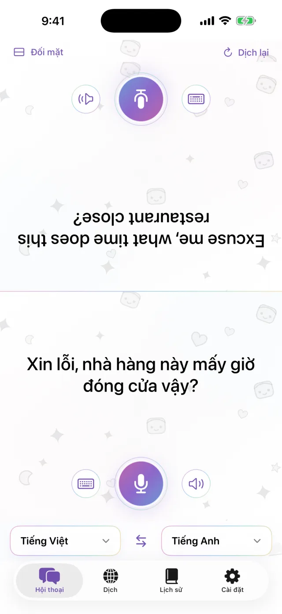
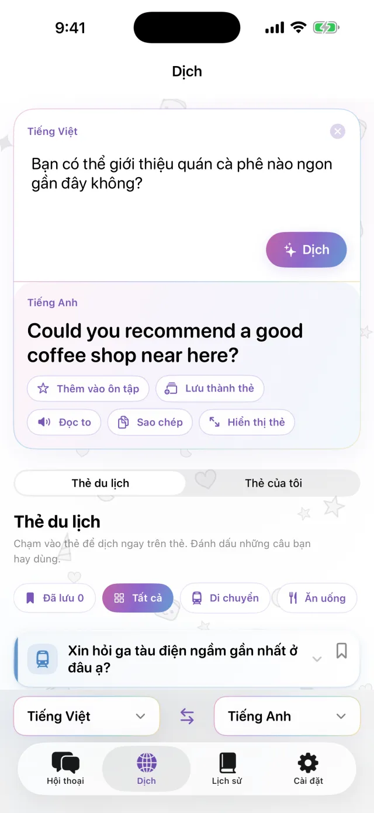
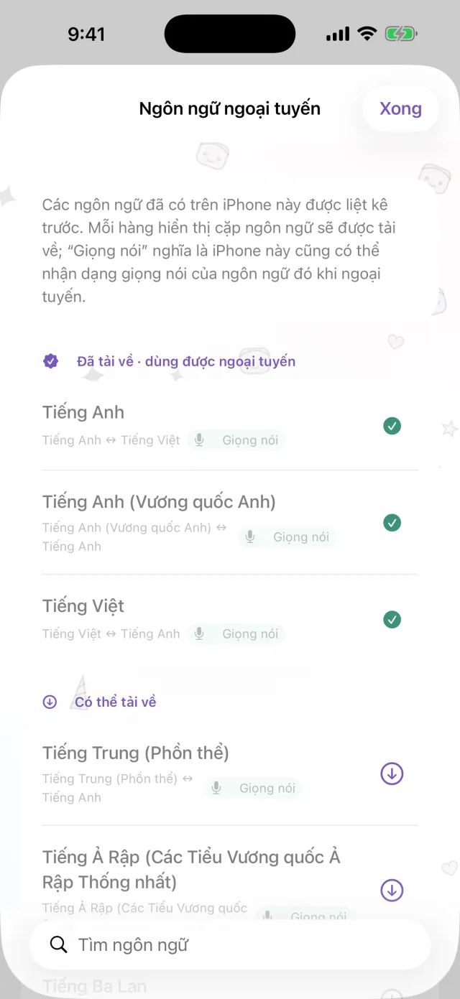
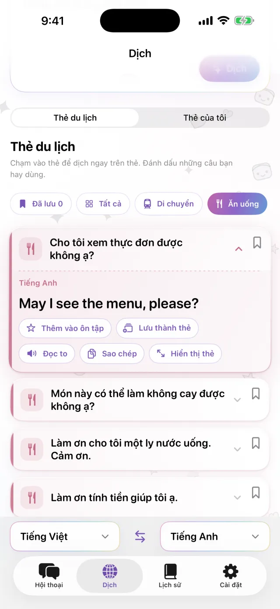
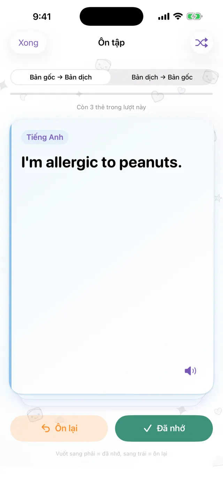

Ứng dụng dịch cho iPhone
Ứng dụng dịch cho iPhone
Đặt iPhone ở giữa.
Thế là xong.
Chạm vào micro và nói. Bản dịch hiện ở nửa màn hình đối diện, hướng về phía người kia. Khi họ trả lời, cách dùng cũng giống vậy. Tải sẵn các ngôn ngữ thì không cần kết nối mạng vẫn dùng được.
Sắp có trên App Store- Khoảng 20 ngôn ngữ
- Ngoại tuyến sau khi tải
- Không cần đăng ký

Nhập văn bản
Không tiện nói thành tiếng? Hãy gõ.
Ở nơi yên tĩnh, hoặc khi người kia nói quá nhanh, bạn chỉ cần gõ. Bản dịch có thể phóng to toàn màn hình để bạn đưa cho họ xem.
- Sao chép hoặc nghe đọc to
- Đổi chỗ hai ngôn ngữ chỉ với một lần chạm

Ngoại tuyến
Không có mạng vẫn dịch được
Dịch, nhận dạng giọng nói và đọc to đều chạy ngay trên iPhone. Hãy tải trước các ngôn ngữ cần dùng khi đi du lịch, bạn có thể dùng ngay trên máy bay hoặc khi chưa mua SIM. Lời bạn nói không được gửi lên máy chủ và bản ghi âm không được lưu lại.

Thẻ câu nói
Lưu những câu bạn lúc nào cũng cần nói
Địa chỉ khách sạn, dị ứng thực phẩm, nhà ga bạn đang tìm. Hãy lưu thành thẻ để không phải gõ lại. Chạm vào thẻ, câu sẽ được dịch sang ngôn ngữ của người đối diện. Có sẵn các thẻ về di chuyển, ăn uống, lưu trú và mua sắm.

Pro
Ôn lại các câu đã lưu đúng lúc cần nhớ
Chạm vào ngôi sao trên một câu để lưu lại và ôn tập. Nếu bạn nhớ, câu đó sẽ quay lại sau 1, 3, 7, 14 rồi 30 ngày. Nếu chưa nhớ, bạn sẽ gặp lại câu đó ngay trong ngày. Bạn có thể ôn từ bản gốc sang bản dịch hoặc ngược lại. Phần này dành cho Pro.

Dùng khi
- Gọi món ở quán ăn nhỏ
- Nói địa chỉ với tài xế taxi
- Giải thích tình trạng dị ứng ở hiệu thuốc
- Gửi hành lý ở quầy lễ tân khách sạn
- Hỏi đường
Xem trong 30 giây
Video này được quay khi đang bật chế độ máy bay.
Thông tin cơ bản
| Ngôn ngữ | Khoảng 20 (các ngôn ngữ Apple hỗ trợ dịch trên thiết bị) |
|---|---|
| Ngoại tuyến | Có, sau khi tải các ngôn ngữ |
| Nhập bằng giọng nói | Có. Một số ngôn ngữ chỉ hỗ trợ nhập văn bản |
| Tài khoản | Không cần |
| Giá | Miễn phí. Pro tính phí riêng (xem bên dưới) |
| Yêu cầu | iPhone dùng iOS 18 trở lên |
- Lần đầu dùng cần có kết nối mạng để tải các ngôn ngữ.
- Giá hiển thị bằng đơn vị tiền tệ tại nơi bạn ở trên App Store.
Miễn phí và Pro
Miễn phí
- Trò chuyện trực tiếp đối mặt
- Nhập văn bản và hiển thị toàn màn hình
- Dịch ngoại tuyến
- Thẻ du lịch và 3 thẻ do bạn tạo
- Có quảng cáo biểu ngữ nhỏ
Pro
- Không có quảng cáo
- Số lượng thẻ không giới hạn
- Lịch sử dịch và ôn tập theo lịch
Theo tuần, theo tháng hoặc mua một lần.
Trước khi đi, hãy tải sẵn các ngôn ngữ.
Sắp có trên App StoreiPhone · iOS 18 trở lên · Tải miễn phí · Cách dùng từng màn hình